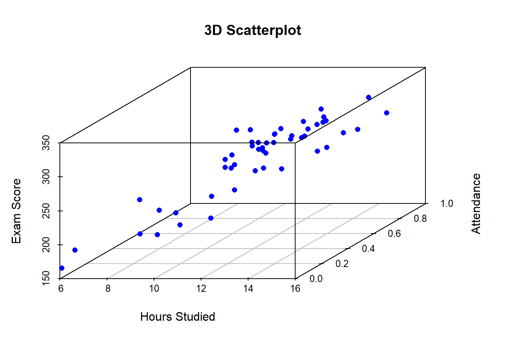

Chapter 6 Multiple Regression
This section extends the simple regression model. Recall that in the simple regression model there was on independent variable and one dependent variable, for instance, we determined that there was a relationship between the final mark one gets for any subject and the time they spend preparing for the subject. It is clear that not only the time one spend study will after their final grade but other factors like age, previous academic performance, tutor availability etc, will affect one’s grades.
6.1 Multiple Regression Assumptions
6.1.1 Linearity:
The relationship between the dependent variable and the independent variable is linear. This means that the change in the dependent variable is proportional to the change in the independent variable. This assumption can be checked by creating a scatter plot of the data and visually assessing whether the data points appear to follow a straight line.
6.1.3 Independence:
The residuals are independent. In particular, there is no correlation between consecutive residuals in time series data.
6.1.4 Homoscedasticity:
The variance of the residuals is constant across all levels of the independent variable. This means that the spread of the residuals is consistent across the range of the independent variable. This assumption can be checked by creating a residual plot and visually assessing whether the spread of the residuals appears to be constant.
6.1.6 Normality
The residuals are normally distributed. This means that the distribution of the residuals should be symmetric and bell-shaped. This assumption can be checked by creating a histogram or a normal probability plot of the residuals and visually assessing whether the distribution appears to be normal
6.2 Multiple Regression Equation
Considering the above relationship, We ignore tutor availability for now and incorporate it later as a dummy variable. Dummy variables will be explained in detail in a later section. The goal of multiple regression analysis is to determine the degree to which each independent variable influences the dependent variable. Specifically, it seeks to identify the linear relationship between the dependent variable and each independent variable, while controlling for the other independent variables in the model.
To conduct multiple regression analysis with student marks as the dependent variable and hours studying plus other variables as independent, one would first collect data on these variables for a sample of students. This could be done through surveys, questionnaires, or other methods of data collection.
Once the data has been collected, the next step is to create a multiple regression model. This involves specifying the equation that describes the linear relationship between the dependent variable and the independent variables. The equation takes the form:

By looking at the 3D scatterplot, we can see that there is a positive relationship between hours_studied and exam_score, and a positive relationship between attendance and exam_score, while holding homework_completed constant. This can be explained in terms of the multiple regression analysis, where the coefficients for hours_studied, attendance, and homework_completed represent the change in the response variable (exam_score) for a one-unit increase in the corresponding predictor variable, while holding all other predictors constant. In this example, we can say that for every one additional hour studied, the expected exam score increases by 10 points, while holding attendance and homework completed constant. Similarly, for every additional attendance, the expected exam score increases by 20 points, while holding hours studied and homework completed constant. The 3D scatterplot helps to visualize these relationships and understand the interaction between the predictors.
6.2.1 ANOVA Table
The ANOVA (Analysis of Variance) table for multiple regression is a table that summarizes the results of a multiple regression analysis. The ANOVA table provides information on the amount of variability in the dependent variable that can be explained by the independent variables in the model. The ANOVA table is typically divided into two parts, the regression or explained part and the residual or unexplained part. These components are explained as follows:
- Total Sum of Squares (SST): The sum of squared deviations of the predicted values from the mean of the dependent variable. This represents the total variation in the dependent variable that can be explained by the independent variables in the model.
- Residual Sum of Squares (RSS): The sum of squared residuals, which represent the variation in the dependent variable that is not explained by the independent variables in the model.
- Mean Square (MS): The sum of squares divided by the degrees of freedom.
- Mean Square (MS): The sum of squares divided by the degrees of freedom.
- Root Mean Square Error (RMSE): The square root of the mean square error, which represents the standard deviation of the residuals.
- F-value: The ratio of the mean square regression to the mean square error. This is a test statistic used to determine whether the regression model as a whole is significant.
An ANOVA table for a multiple regression model with at least two independent variables is show below:
| Source | Sum.of.Squares | Degrees.of.Freedom | Mean.Square | F.value |
|---|---|---|---|---|
| Regression | SSE | n-k-1 | SSE/(n-k-1) | MSE/MSR |
| Residual | RSS | K | RSS/K | - |
| Total | SSE+RSS | n-1 | - | - |
6.2.1.1 The Standard Error of Estimate (SEE)
The Standard Error of Estimate (SEE) is a statistical term that measures the average distance between the predicted values from a regression model and the actual values in the data set. It is also known as the root mean square error (RMSE) or the standard error of regression.
In other words, SEE provides a measure of the accuracy of the predictions made by a regression model. It tells us how much the actual data points are expected to deviate from the predicted values by the model. A lower SEE value indicates that the regression model is more accurate in predicting the values of the dependent variable.
SEE is calculated as the square root of the residual mean square (MSE), which is the sum of the squared differences between the predicted values and the actual values, divided by the degrees of freedom. The formula for SEE is:
\[SEE = \sqrt{(MSR)}\]
where \(MSE = \frac{SSR}{df}\), SSR is the sum of squared residuals, and df is the degrees of freedom. SEE is typically reported in the same units as the dependent variable and is often used as a measure of the quality of the fit of a regression model. It is important to note that SEE does not provide information about the validity of the regression model itself, but rather its predictive accuracy.
6.2.1.2 The Coefficient of Determination
The coefficient of determination, denoted as R-squared \((R^2)\), is a statistical measure that represents the proportion of the variance in the dependent variable that is explained by the independent variables in a regression model. R-squared is calculated as the ratio of the explained variance to the total variance of the dependent variable. \[R^2 = \frac{SSE}{SST}\]
It ranges from 0 to 1, with higher values indicating a better fit of the regression model to the data. In other words, R-squared tells us how well the regression model fits the data, and how much of the variation in the dependent variable can be attributed to the independent variables included in the model. It is commonly used to evaluate the predictive power of a regression model. However, it is important to note that a high R-squared value does not necessarily mean that the regression model is a good fit for the data or that it has a strong predictive power. R-squared should be used in conjunction with other measures of goodness of fit and should be interpreted carefully in the context of the research question and the specific regression model being used.
6.2.1.3 The F-Statistic
In multiple regression, the F-statistic is calculated from the Analysis of Variance (ANOVA) table and is used to test the overall significance of the regression model. The F-statistic measures the ratio of the explained variance to the unexplained variance in the dependent variable. It compares the variation in the dependent variable that can be explained by the independent variables in the regression model to the variation that cannot be explained by the model. The F-statistic is calculated as:
\[F = \frac{(MSR / k)}{(MSE / (n - k - 1))} = \frac{MSE}{MSR}\]
where \(MSE\) is the mean square for regression, the explained part, \(k\) is the number of independent variables in the model, \(MSR\) is the mean square error or the residual sum of squares divided by the degrees of freedom, and \(n\) is the sample size.
Example 7.1:
Complete the ANOVA table below and calculate the following:- \(SEE\)
- \(R^2\)
- \(F-Statistic\)
| Source | Degrees.of.Freedom | Sum.of.Squares | Mean.Square |
|---|---|---|---|
| Regression | — | 133.42 | — |
| Residual | — | — | — |
| Total | 15 | 169.09 | NA |
Solution:
6.3 Hypothesis Testing
Hypothesis testing in multiple regression is used to determine whether the relationship between the independent variables and the dependent variable in a regression model is statistically significant. The hypothesis testing procedure involves formulating null and alternative hypotheses, calculating test statistics, and comparing the test statistics to critical values or p-values.
The null hypothesis in multiple regression states that the regression coefficients of all the independent variables in the model are zero, indicating that there is no linear relationship between the independent variables and the dependent variable. The alternative hypothesis, on the other hand, states that at least one of the regression coefficients is not zero, indicating that there is a significant relationship between the independent variables and the dependent variable.
The most commonly used test statistic in multiple regression is the F-test, which compares the explained variance in the regression model to the residual variance. The F-test measures the overall fit of the model and tests the null hypothesis that all of the regression coefficients are zero. A significant F-test indicates that at least one of the independent variables is significantly related to the dependent variable.
In addition to the overall F-test, individual t-tests can be performed for each independent variable in the model to test whether the regression coefficient for that variable is significantly different from zero. The t-test measures the magnitude of the relationship between the independent variable and the dependent variable and tests the null hypothesis that the regression coefficient is zero.
The results of hypothesis testing in multiple regression can be used to determine the significance of the independent variables in predicting the dependent variable, and to identify the most important predictors in the model. However, it is important to interpret the results carefully, taking into account the assumptions of the regression model and any potential issues with multicollinearity, heteroscedasticity, or other forms of model misspecification.
6.4 Model Fitness and Predictive Power
The usual measure of goodness of fit include the coefficient of determination R-Squared, the Adjusted R-Squared, the Standard Error of Estimate (SEE), Residual plots, and the F-Test. We will also use the Bayesian Information Criterion (BIC) to test model and we will use the Akaike’s Information Criterion (AIC) to determine which models have better predictive power.
6.4.1 Adjusted R-Squared
Goodness of fit in multiple regression refers to how well the regression model fits the observed data. It is a measure of the degree to which the model explains the variation in the dependent variable. There are several statistics that can be used to assess the goodness of fit of a multiple regression model. We have already discussed the \(R^2\) which is also known as the coefficient of determination. The \(R^2\) will always increase if more independent variables are added to the model and having more independent does not necessarily mean the model has gotten better. To deal with this issue, we will use the Adjusted R-squared. The Adjusted R-squared is a modified version of R-squared that takes into account the number of predictor variables in the model. It is a more accurate measure of goodness of fit than R-squared when there are many predictor variables.
\[Adjusted \ R^2 = 1 - \Big[\big(\frac{n-1}{n-k-1}\times\big(1-R^2\big)\Big]\] An increase in the Adjusted R-Squared implies that the particular variable maybe be significant.
6.4.2 Akaike’s Information Criterion (AIC)
Akaike’s Information Criterion (AIC) is a measure of the goodness of fit of a statistical model that takes into account both the model’s ability to fit the data and its complexity. In multiple regression analysis, AIC is used to compare different regression models and determine which one is the best fit for the data.
AIC is calculated as:
\[AIC = n\times ln\Bigg(\frac{RSS}{n}\Bigg) + 2(k+1)\]
if \(AIC_N < AIC_M\), then model N is a better predictor.
AIC is preferred for the predictive power of the model because it balances the trade-off between the model’s ability to fit the data and its complexity. A model that fits the data well but is too complex can overfit the data, which means that it may perform well on the training data but poorly on new data. On the other hand, a model that is too simple may underfit the data, which means that it may not capture the underlying relationships in the data and may have poor predictive power. AIC addresses this trade-off by penalizing models that are too complex and selecting models that fit the data well but are not overly complex. By selecting the model with the lowest AIC value, we can choose the model that is the best compromise between model fit and model complexity. Furthermore, AIC is a useful tool for model selection because it can be used to compare different models, even if they have different sets of independent variables. This allows us to choose the model that provides the best balance between goodness of fit and complexity, which is important for achieving good predictive power.
AIC has several advantages over other measures of goodness of fit, such as R-squared and the F-test. First, AIC takes into account the complexity of the model, which means that it penalizes overfitting and avoids selecting models that are too complex and have too many parameters. Second, AIC can be used to compare models that have different numbers of parameters and variables. Finally, AIC can be used to compare non-nested models, which means that it can be used to compare models that have different sets of independent variables. However, it is important to note that AIC is not a definitive measure of the goodness of fit of a model and should be used in conjunction with other measures and subject matter expertise to make informed decisions about which model is the best fit for the data.
6.4.3 Bayesian Information Criterion (BIC)
The Bayesian Information Criterion (BIC) is a measure of the goodness of fit of a statistical model that takes into account both the model’s ability to fit the data and its complexity. Like the AIC, the BIC is used to compare different models and determine which one is the best fit for the data.
The BIC is calculated as:
\[BIC = n\times ln\Bigg(\frac{RSS}{n}\Bigg) + ln(n)\times(k+1)\]
if \(BIC_N < BIC_M\), then model N is a better predictor.
The BIC value for a model is a relative measure of its goodness of fit, with lower values indicating a better fit. However, unlike the AIC, the BIC places a stronger penalty on the number of parameters in the model. As a result, the BIC tends to select simpler models than the AIC, and is therefore preferred when parsimony is a priority.
It is important to note that like the AIC, the BIC is not a definitive measure of the goodness of fit of a model and should be used in conjunction with other measures and subject matter expertise to make informed decisions about which model is the best fit for the data. However, the BIC is particularly useful in situations where parsimony is important, such as when dealing with high-dimensional data, as it tends to select models that strike a balance between goodness of fit and model complexity.
Example 7.2:
Compare R-Squared, Adjused R-Squared, AIC and BIC- Calculate the sum of 5 and 7.
- Create a vector of the numbers 1 to 10.
- Plot the sine function from 0 to 2π.
6.5 Model Misspecification
Model misspecification occurs when the statistical model used to analyze the data does not accurately reflect the true relationship between the variables being studied. This can happen for a variety of reasons, including incorrect functional form, missing variables, measurement error, and omitted interactions between variables.
When a model is misspecified, the estimated parameters and statistical tests based on the model may be biased or inconsistent. For example, if a variable that should be included in the model is omitted, the coefficient estimates for the other variables in the model may be biased and inconsistent. Similarly, if the functional form of the model is incorrect, the estimated coefficients may be biased and the model may not accurately capture the true relationship between the variables.
Model misspecification can have serious consequences for the conclusions drawn from the analysis. For example, if a variable is omitted from the model, the estimated effects of the other variables may be incorrect, leading to incorrect inferences about the relationships between the variables. This can lead to incorrect decisions being made based on the analysis.
To avoid model misspecification, it is important to carefully consider the functional form of the model and to include all relevant variables in the analysis. Additionally, sensitivity analyses can be conducted to explore the effects of model misspecification and to test the robustness of the results to different modeling assumptions.
6.5.1 Heteroscedasticity
Heteroscedasticity is a term used in statistics to describe a situation where the variance of the residuals (the differences between the observed values and the predicted values) is not constant across the range of values of the independent variable(s). In other words, the variability of the errors is different for different values of the predictor variable(s). This violates the assumption of homoscedasticity, which assumes that the variance of the residuals is constant for all levels of the independent variable(s).
Heteroscedasticity can lead to biased and inefficient parameter estimates in regression analysis. In particular, the estimated standard errors of the regression coefficients may be incorrect, leading to incorrect inferences about the statistical significance of the coefficients. The problem is more pronounced when the sample size is small, as it may be more difficult to detect the heteroscedasticity and the standard errors may be more severely biased.
Heteroscedasticity can arise for a variety of reasons, including outliers, measurement error, and omitted variables. It is often more likely to occur in cross-sectional data than in time series data.
To detect heteroscedasticity, residual plots can be examined, such as a plot of the residuals against the fitted values or against each of the predictor variables. A formal test, such as the Breusch-Pagan or White test, can also be used to test for the presence of heteroscedasticity.
If heteroscedasticity is detected, several methods can be used to address the problem, including transforming the dependent or independent variable(s), using weighted least squares regression, or using robust standard errors. The appropriate method depends on the specific situation and the goals of the analysis.
6.5.2 Serial Correlation
Serial correlation, also known as autocorrelation, is a statistical phenomenon that occurs when the error terms in a regression model are correlated with one another over time. This means that the error terms at one point in time are related to the error terms at another point in time, violating the assumption of independence of the error terms.
Serial correlation can arise in time series data when there is some form of temporal dependence between the observations. For example, in financial data, stock prices may be positively correlated with their own past values, leading to positive serial correlation in the residuals of a regression model that uses stock prices as the dependent variable.
Serial correlation can lead to biased and inefficient parameter estimates in regression analysis. In particular, the estimated standard errors of the regression coefficients may be incorrect, leading to incorrect inferences about the statistical significance of the coefficients. The problem is more pronounced when the serial correlation is strong, as it may be more difficult to detect the correlation and the standard errors may be more severely biased.
To detect serial correlation, residual plots can be examined, such as a plot of the residuals against time or against their own lagged values. A formal test, such as the Durbin-Watson test, can also be used to test for the presence of serial correlation.
If serial correlation is detected, several methods can be used to address the problem, including using autoregressive integrated moving average (ARIMA) models, incorporating lagged dependent variables or other predictors that capture the temporal dependence, or using Cochrane-Orcutt or feasible generalized least squares (FGLS) regression to correct for the correlation. The appropriate method depends on the specific situation and the goals of the analysis.
6.5.3 Multicollinearity
Multicollinearity is a statistical phenomenon that occurs when two or more independent variables in a regression model are highly correlated with each other. This means that there is a linear relationship between the independent variables, which can lead to problems in the estimation of the regression coefficients and the interpretation of the results.
Multicollinearity can arise when the independent variables are measuring similar or related concepts. For example, in a regression model that predicts a person’s income, both education level and years of experience in the workforce might be included as independent variables. These two variables are likely to be correlated with each other because people with more education tend to have more experience in the workforce. This correlation can lead to multicollinearity in the regression model.
Multicollinearity can lead to biased and unstable estimates of the regression coefficients, making it difficult to interpret the importance of each independent variable in predicting the dependent variable. Additionally, the standard errors of the regression coefficients may be inflated, leading to incorrect inferences about the statistical significance of the coefficients.
To detect multicollinearity, various methods can be used, such as examining the correlation matrix of the independent variables, calculating the variance inflation factor (VIF), or performing a principal components analysis (PCA). A VIF value of greater than 5 or 10 indicates a high degree of multicollinearity, and in such cases, it is recommended to remove one or more of the highly correlated variables from the model.
To address multicollinearity, several methods can be used, including removing one or more of the highly correlated variables, combining the variables into a single variable using factor analysis or principal components analysis, or using regularization methods such as ridge regression or lasso regression. The appropriate method depends on the specific situation and the goals of the analysis.
6.6 Influence Analysis
Influence analysis is a technique used in regression analysis to identify influential observations, which are observations that have a disproportionately large impact on the estimated regression coefficients or other diagnostic measures. Influential observations can arise due to outliers, leverage points, or other factors that affect the model assumptions or the statistical properties of the estimation method.
Influence analysis typically involves computing various diagnostic measures, such as Cook’s distance, DFFITS, or leverage values, for each observation in the dataset. These measures quantify the impact of each observation on the model fit, and can be used to identify observations that are potentially influential.
Cook’s distance, for example, measures the change in the estimated regression coefficients when a particular observation is removed from the dataset. An observation with a high Cook’s distance indicates that removing that observation would lead to a significant change in the estimated coefficients, and may be considered influential. Similarly, DFFITS measures the impact of each observation on the estimated regression coefficients and standard errors, and can be used to identify observations that have a large effect on the overall model fit.
Leverage values, on the other hand, measure how much an observation’s predictor values differ from the average predictor values in the dataset. Observations with high leverage values have predictor values that are far from the average, and can have a large impact on the estimated regression coefficients.
Once influential observations are identified, various methods can be used to deal with them. One approach is to remove the influential observations from the analysis, but this should be done carefully to avoid biasing the results. Alternatively, robust regression methods can be used that are less sensitive to influential observations, such as M-estimation or weighted least squares.